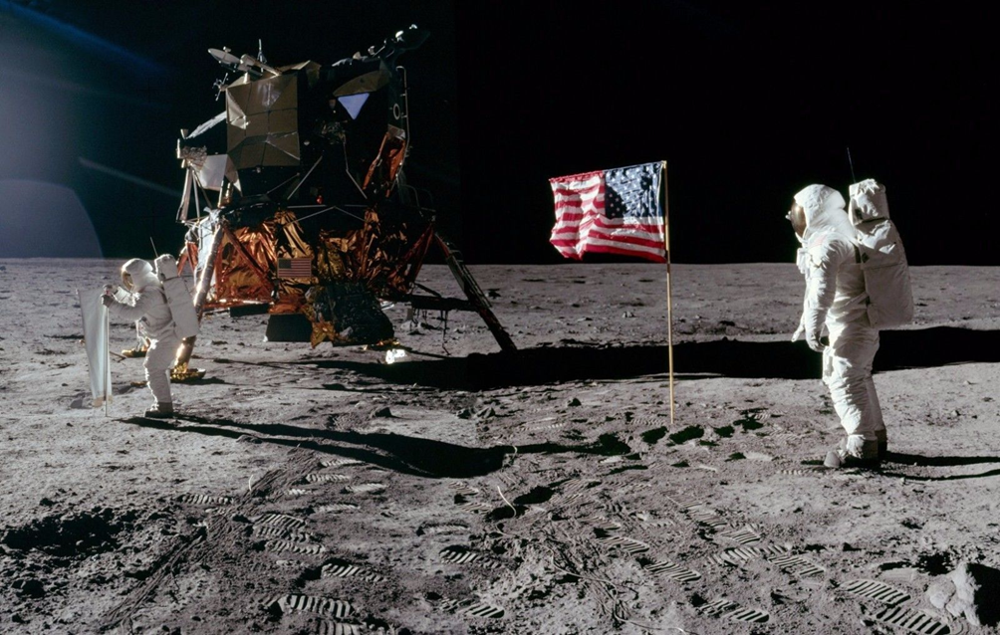

Storia¶
Il primo viaggio sulla luna¶
Apollo 11 fu la missione spaziale che portò i primi uomini sulla Luna, gli astronauti statunitensi Neil Armstrong e Buzz Aldrin, il 20 luglio 1969 alle 20:17:40 UTC.
Armstrong fu il primo a mettere piede sul suolo lunare sei ore più tardi dell'allunaggio, il 21 luglio alle ore 02:56 UTC. Aldrin arrivò 19 minuti dopo.
L'avventura di Apollo 11 iniziò dal Kennedy Space Center, in Florida.
L'equipaggio¶
L'equipaggio era composto da tre astronauti: il comandante Neil Armstrong, Michael Collins, pilota del modulo di comando Columbia ed Edwin Aldrin, pilota del modulo lunare Eagle.
La Missione¶
La missione prese avvio ufficialmente il 16 luglio alle 13.32 UTC, quando il razzo vettore 'Saturn V' dalla piattaforma di lancio 39A lanciò la navicella.
Dopo un viaggio di quattro giorni durante la discesa verso la luna ci fu un unico problema che fu corretto da Aldrin.
Durante il distacco del modulo lunare Eagle da quello di comando non fu sfiatato un sistema di ritenuta pressione e ciò determinò una spinta superiore a quella calcolata aumentando la velocità di discesa dell’Eagle. Un secondo intervento fu necessario in quanto il modulo lunare si stava dirigendo in una zona piena di crateri che durante l’atterraggio potevano danneggiare l’Eagle. A 13 km dal suolo il comandante Neil Armstrong prese allora i comandi manuali e cercò un posto migliore dove atterrare, il cosiddetto “Mare della Tranquillità”.
Dopo qualche ora ci fu la prima passeggiata lunare durante la quale fu piantata sul suolo lunare la bandiera americana anche come simbolo per aver battuto i russi nella gara su chi arrivava prima sulla Luna.
Fu una gara per dimostrare chi era più efficiente tra URSS e USA che si trovavano in guerra: LA GUERRA FREDDA.
La Guerra Fredda¶
Fu chiamata così perché non ci furono conflitti armati tranne qualche piccola battaglia e anche perché con essa si indica la contrapposizione politica, ideologica e militare che venne a crearsi intorno al 1947, tra le due potenze principali emerse vincitrici dalla Seconda guerra mondiale.
Si trattò sostanzialmente della contrapposizione tra due grandi ideologie politico-economiche: la democrazia-capitalista da una parte e il socialismo reale-comunismo dall'altro.
Questa contrapposizione influenzò fortemente per decenni l'opinione pubblica mondiale ed ebbe il suo concreto emblema nella divisione della Germania in Germania Ovest e Germania Est, della città di Berlino tramite l'omonimo muro e nella figura retorica della cosiddetta "cortina di ferro", coniata per la prima volta da Winston Churchill nel 1946, volta a definire la netta distinzione territoriale e ideologica che si stava venendo a creare tra i due blocchi socioeconomici dominanti.
Le relazioni tra Stati Uniti e Unione Sovietica si indirizzarono successivamente verso il disgelo (o anche, come poi si disse, la distensione), pur non mancando alcune gravi crisi, come quella di Berlino del 1959-61, culminata con la costruzione di un muro tra la parte occidentale e quella orientale della città (uno dei più significativi simboli della guerra fredda), e la crisi missilistica di Cuba del 1962, forse il momento in cui maggiormente il mondo intero si sentì sull'orlo di un conflitto nucleare.
Nel 1965, con le proposte sulla non proliferazione delle armi atomiche, si aprì la fase della cosiddetta coesistenza pacifica, accompagnata in realtà da nuove tensioni internazionali.
La più grave emerse con la guerra del Vietnam (1965-75): gli Americani, vedendo profilarsi la fine del regime anticomunista nel Vietnam del Sud, intervennero militarmente, ma ne uscirono nettamente sconfitti, oltre che lacerati al loro interno.
Con gli accordi di Helsinki del 1975 la guerra fredda, per molti versi, si concluse: venne riconosciuto l'equilibrio mondiale realizzatosi fino a quel momento.
Con la conclusione della guerra fredda finì anche il comunismo che era la dittatura che teneva in piedi l’URSS.